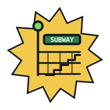
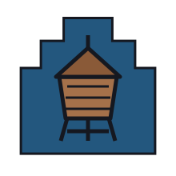
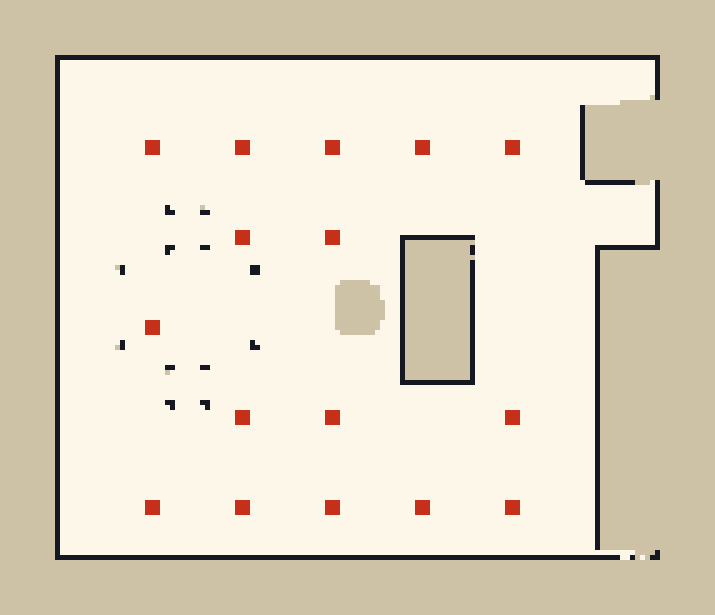
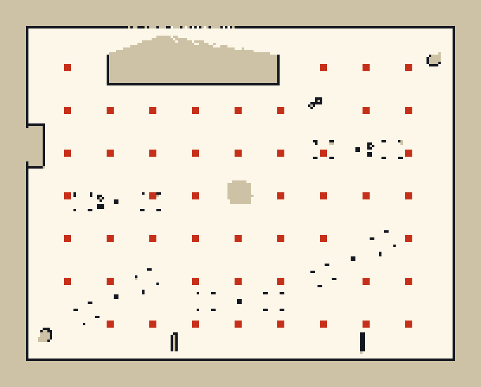
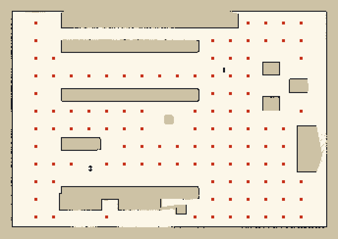
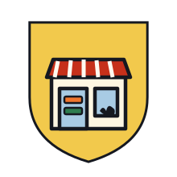
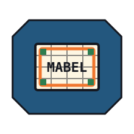
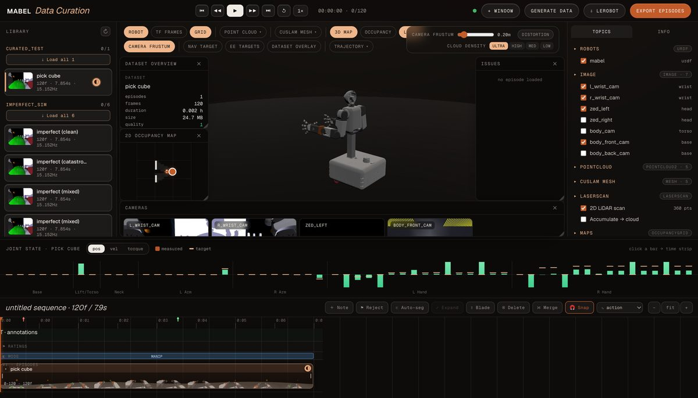
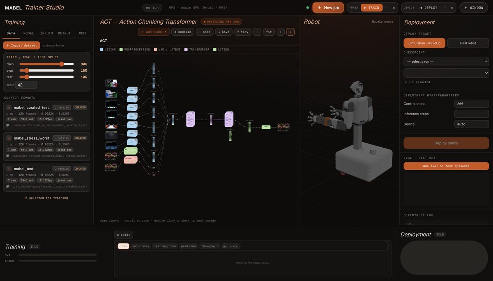
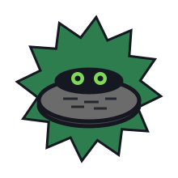

Teleoperated demonstrations become joint-reference chunks predicted by ACT and executed through the same whole-body controller. The current v2 dataset covers hand grasping; the tools below support collection, curation, training and evaluation.

A robot that does not know where it is cannot do anything else. Three answers, all measured against MuJoCo ground truth in the same room: wheels alone drift the moment one slips, vision corrects it, and the filter keeps whichever is currently telling the truth.
| Estimator | Position error | Heading | Path length vs truth |
|---|---|---|---|
| Wheel odometry only | 0.67 m | 12.8° | 3.0× — slip reads as distance |
| Visual (cuVSLAM) | 0.21 m | 3.4° | 1.10× |
| Fused EKF | 0.21 m | 3.4° | 1.08× |
Three steered modules over-determine the body twist, so swerve_odometry
least-squares them into one (vx, vy, ω) from
/joint_states alone. Honest but slip-blind.
laser_odometry matches each scan to a keyframe rather than to the last
scan, so error does not compound frame to frame. 720 points at 13 Hz costs 2–4 ms.
Stereo plus IMU on the GPU. Absolute pose, no drift with distance — the estimate the filter trusts.
Takes velocity from the wheels and pose from vision, at 30 Hz in 2-D. It is tuned and benchmarked, but its launch file pins simulated time and no bring-up script starts it — built, not yet deployed.
The base itself is identified, not assumed. A system-ID sweep puts the real motion at 0.989 × commanded — 1.1% slip, identical on every axis, decoupled, linear down to 0.05 m/s, with a first-order velocity ramp of τ = 0.13 s. Modelling that ramp cut held-out error from 4.0% to 2.2% of distance travelled (4.7 cm over 2.16 m). It also reframes the wheel odometry's 3× over-read: the robot was stuck, not mis-modelled.

Drive it yourself and watch the map appear. MABEL builds
its own floor plan from a 360-point LiDAR — no beacons, no prior map, no
markers on the walls. Two stacks do it: a GPU visual one and a CPU LiDAR one,
both publishing the same map → odom. The tool below is the CPU
one, ported to run in this page.
And it can do this without you. MABEL runs a Yamauchi-style
frontier explorer: it watches the live occupancy grid, finds the
cells where known-free space touches unknown, clusters them, scores each cluster by
travel cost less an information-gain bonus, and sends the best one to Nav2 as a
NavigateToPose goal. Unreachable goals are blacklisted so it never loops
on one, and when several cycles in a row turn up nothing it latches
exploration_complete and returns home. It is deliberately SLAM-agnostic
— its only inputs are /map and the
map → base_link transform, so it works behind either
stack below.
Read the node ↗
Two rectified stereo streams and an IMU into cuVSLAM; nvblox turns depth into a TSDF mesh and slices a 2-D occupancy layer out of it. Everything loads as composable nodes into one container so frames move by zero-copy.
| Voxel size | 0.05 m navigating · 0.01 m manipulating |
| Integration range | 4 m nav · 1.5 m manip |
| ESDF slice | 0.02–0.40 m band, cut at 0.13 m |
| Colour integration | 5 Hz nav · 15 Hz manip |
One asynchronous
lifecycle node on /scan, Ceres behind it, publishing map → odom
at 50 Hz. Loop closure is on: it searches 3 m and needs a chain of ten scans before it
will believe a match.
| Resolution | 0.05 m |
| Laser range used | 0.45 – 12 m |
| New node every | 0.2 m or 0.2 rad |
| Map update | every 0.5 s |



Real grids, built by casting MABEL’s own lidar
(12 m, 720 bins) against the scene geometry and integrating log-odds at
5 cm, slam_toolbox’s own resolution — dark is occupied,
cream is swept and empty, tan was never seen, and the red track is where the
robot stood. This is mapping with known poses, not SLAM: the poses come
from the simulator rather than from scan matching, so it is the grid a perfect
front end would build. Regenerate with
simulation/mabel_mujoco/scripts/tools/render_slam_maps.py.
We recommend the LiDAR path, and the robot already picks it. Bring-up
listens for a /scan for 15 seconds. If one appears, slam_toolbox takes over the
2-D map and map → odom — cuVSLAM is switched off entirely and
nvblox is demoted to 3-D mesh only, for the apps to draw. The reason is compute, not
accuracy: LiDAR SLAM is CPU-only, while the visual stack wants the same GPU your policy
does. nvblox cost scales with the cube of voxel size, so 5 cm is roughly 4× cheaper than
3 cm, and running the cameras at 15 fps instead of 30 roughly halves the load with no
practical accuracy cost.
A saved room is four files: a 2-D .pgm+.yaml for Nav2, a
.ply mesh for the apps, and a .nvblx for relocalisation.
Frontier exploration can drive the whole survey and save at the end.

The paper records stereo head and both wrist RGB streams at nominal 30 Hz, with available depth, plus timestamped joint feedback, commanded references, base twist and lift-jog commands at nominal 50 Hz. Raw timestamps and validity flags are retained. The demonstrated joint references q* supervise learning; base-twist and lift-jog fields are stored separately from the 59 joint coordinates.
Current hand-grasping dataset · v2. 80 takes, 117 curated episodes and 68,364 frames: 38.0 minutes at 30 fps. The 1.5 GB export stores four camera videos and joint data. Training uses the left head view and both wrists, with 240 × 320 cached images (height × width).

Review camera streams and robot state together, trim unwanted intervals and discard faulty episodes while preserving the raw recording. The browser example below lets you explore timing, frozen motion and missing frames in three sample takes.

The review interface brings camera views, robot state, a filmstrip timeline and episode-quality tools into one workspace. The paper pipeline exports the curated data to LeRobot v3 at 30 Hz; its policy uses the left head view and both wrists.
Open Data Curation ↗ Source ↗ACT combines three camera views with one second of joint history to predict four seconds of actions. The v2 dataset is split 80 / 10 / 10 by take with seed 42. Every episode from a take stays in one split.
| Architecture | Decoder | Chunk | Status |
|---|---|---|---|
| ACT — action chunking transformer | transformer + CVAE | 100 | trains, resumes, evaluates |
| DiT — diffusion transformer | diffusion, 10 steps | 16 | trains, resumes, evaluates |
| π₀ — vision-language-action | flow matching | 50 | launches; needs a gated licence |
| π₀.₅ — VLA with co-training | flow matching | 50 | launches; needs a gated licence |
Wire the blocks; it compiles to real PyTorch. Not a diagram of the model — the graph the training run executes, which is why the picture and the network cannot drift apart. Switch between ACT, the Diffusion Transformer and π0 / π0.5, drag, zoom, and double-click any block to open it down to the individual Conv, Linear and attention atoms. Work in progress — expect rough edges.

Live loss curves, the checkpoint browser, the scope picker, and every run as a directory on disk with its manifest, config and metrics beside it — a run survives a database wipe, because the filesystem is the database.
Open the Trainer Studio ↗ Queue a run →Teach the robot something, from here, without an account. Pick an architecture, choose a curated dataset, set a few hyperparameters and submit. Your job joins the community queue; once reviewed it trains on MABEL’s own GPU, and the policy and its learning curves are published back on this page.
Work in progress. The Trainer Studio and the Data Curation studio are both live and both still being polished — the queue runs, the architecture editor compiles, and neither is finished.

ACT action predictions use the same whole-body controller interface as teleoperation. It predicts four seconds of motion, executes the first second, then re-plans from new observations, without temporal ensembling.
Predicted joint-reference chunks include the finger and wrist targets. The controller routes them through the same control interface used by the operator, to hardware or the simulation bridge. The 59-coordinate representation counts the coupled lift as one height.
Training checks use 384 validation clips every 500 steps. The test split stays separate until final evaluation. Overlapping clips are training samples, not additional minutes of demonstrations.
Grasp-and-place scope. The v2 run focuses on the hands and upper body. Its 59-coordinate state and 63-channel action schema retain the full representation; inactive lift, swerve and base-command channels are masked for training. Dataset size and open-loop validation do not establish a new autonomous success rate.
The same stack, the same scenes, the same wire protocol — once on a laptop and once on the robot.